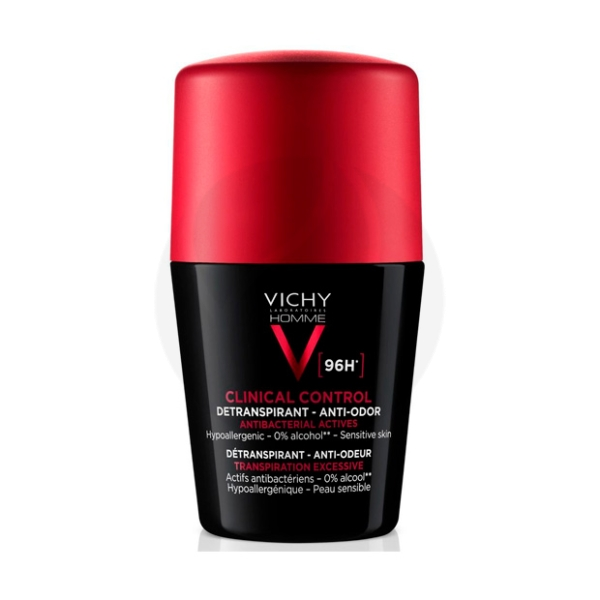
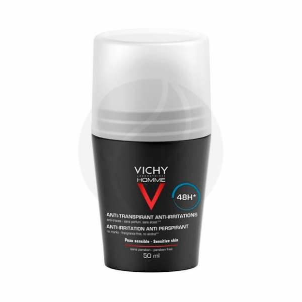

| 1169 |
AQUA / WATER/EAU, ALUMINIUM CHLOROHYDRATE, DIMETHICONE, C14-22 ALCOHOLS, PARFUM / FRAGRANCE, STEARETH-100/PEG-136/HDI COPOLYMER, PERLITE, ZINK PCA, C12-20 ALKYL GLUCOSIDE, PENTYLENE GLYCOL.
|
Vichy Homme Clinical Control дезодорант-антиперспирант шариковый для мужчин, 50мл |
 |
| 1169 |
CYCLOPENTASILOXANE, ALUMINUM CHLOROHYDRATE, STEARYL ALCOHOL, POLYDECENE, PPG-14 BUTYL ETHER, ISOPROPYL PALMITATE, HYDROGENATED CASTOR OIL, PEG-8 DISTEARATE, ACRYLATES COPOLYMER, BHT, C12-13 ALKYL LACTATE, HYDROLYZED ALGIN, JUNIPERUS MEXICANA, LAVANDULA HYBRIDA, SALVIA SCLAREA, STEARYL CAPRYLATE, STEARYL HEPTANOATE, TALC, ZINC SULFATE.
|
Vichy Homme дезодорант для чувствительной кожи с защитой 48 часов, 50мл |
 |